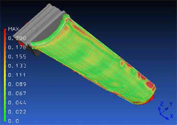

|
Türbin
Kanatlarýnýn Modellenmesinde Tersine Mühendislik Uygulamasý
- Nokta
Bulutu oluþturulmasý (point-cloud data)
- Poligon
að yüzey oluþturma (Polygon-mesh modelling)
- Katý
yüzey oluþturulmasý (Solid surface modelling)
Genellikle
sayýlaþtýrma ve tarama iþlemi bir iþlem merkezi (Machining
Centre) ile entegrasyon halinde yapýlýr. Sayýlaþtýrýcý ve
tarayýcý yazýlýmý bilgisayar tabanlý nümerik kontrolörlere
entegre edilmiþtir veya doðrudan nümerik kontrolör içerisine
adapte edilmiþtir. Tüm bu bilgilerin ýþýðýnda, bir ölçme yazýlýmýndan
beklenen türbin kanadýnýn istenilen unsurlarýný yakalayabilmesidir.
Bu yüzden tüm kanadýn taranmasýna ihtiyaç yoktur.
Aslýnda,
sayýlaþtýrma-tarama metodlarý; özellikle gerçek kanat geometrisinin
daha doðru bir þekilde elde edilmesi sonucunda veri iþleme
yazýlýmýna veri aktarýlmasý için kullanýlan yöntemlerdir.
Aþaðýda, bir kompresör kanadýnýn taranmasýnýn ardýndan elde
edilen verilerden yola çýkarak kanadýn üç aþamalý olarak modellenmesi
gösterilmektedir;
Türbin
Kanadý Yüzeyindeki Aþýnan Bölgelerin Büyüklük ve Posizyonunun
Belirlenmesi
- Taranan
Türbin kanadý modeli orijinal kanat yüzeyi ile karþýlaþtýrýlarak
aþýnan bölgeler tespit edilir.

Türbin
Kanadý Restorasyonunda Kullanýlan Kaplama ve Kaynaklama Yöntemleri
(Coating and Deposition Techniques of Blades)
- Düfizyon
Aluminyum kaplama (Diffused Aluminide Coatings)
- Plazma
ve Metal Püskürtme (Plasma & Metal Sprays)
- Vakumlamalý
ýsýl iþlem (Vacuum Heat Treating)
- Lehimleme
(Brazing)
- Kaynaklama
(Welding)
- Kaynaklama
(Laser powder (Laser powder-wire build wire build-up welding)
up welding)
Aþýnan
bölgelerin tanýmlanmasýndan sonra, uygun bir yöntem ile bu
bölgelerin dolgu malzeme ile doldurulmasý gerekmektedir. Çoðunlukla
kaynaklama veya malzeme doldurma iþlemi kanatlarýn uç kýsýmlarýna,
türbin kanadýnýn hücum ve firar kenarlarýna ve pervanelerin
iç yüzeylerine uygulanmaktadýr. TIG kaynaðý, CO2 ve Nd:YAG
lazer kaynaðý ile plazma kaynaðý bu amaç için kullanýlan yöntemlerdendir.
Bunlara ilaveten lehimleme ise özellikle ince kesit kalýnlýðýna
sahip türbin kanatlarýnda ve pervane kanadýnda kullanýlan
dolgu yöntemlerinden biridir.
Lazerle
kaynaklama iþlemi esnasýnda, kaynak yapýlacak bölgelerin durumuna
baðlý olarak; bakýmý yapýlacak parça öncelikle tarayýcýlar
tarafýndan taranarak 3B modeli oluþturulur. Örneðin kompresör
türbin kanadýnýn uç kýsmýnýn onarýmý aþamasýnda, bazý durumlarda
sadece uç kýsmýn profili kaynak yolu için yeterli olabilmektedir.
CNC kontrollü iþlem ünitesi tarafýndan kaynak yapýlacak taranmýþ
yüzey için kaynaklama zamaný belirlenir ve ne kadar kaynak
malzemesinin kullanýlacaðý hesaplanýr. Kaynaklama parametrelerine
baðlý olarak hýz ve lazer enerji miktarý, dikiþ hareketi yapýlacak
onarým kaynaðý ile iliþkilendirilir. Lazer ýþýný dikey olarak
alttabaka yüzeye yönlendirilir;
Lazer
Kaynaklama Kaynaklama (Laser powder - wire build-up welding)
(Bakýnýz: Ek Bilgi)
Doldurulan
Bölgelerin Ýþlenmesi (Machining of Deposited Areas)
- Doldurulan
bölgelerin posizyonunun belirlenmesi ve iþleme unsuru olarak
tanýmlanmasý (Determination of deposited areas position
and introducing as a machining feature)
- Kullanýlan
iþleme stratejisine göre çok eksenli takým yolu hesaplanmasý
(Generating multi-axis tool path)
- Geometri
ve yüzey kalite denetimi (Quality inspection)
Türbin
kanatlarýnýn restorasyon iþleminin son aþamasý, kanat yüzeyi
üzerindeki fazla malzemenin (doldurulan malzemenin) iþlenerek
istenilen yüzey toleranslarýna döndürmektir. Kanatlarýn karmaþýk
geometrisinden dolayý genelde çok eksenli iþleme operasyonlarý
tercih edilmektedir. Birçok durumda 'taþlama iþlemi' kullanýlmakla
birlikte eðer iþlenecek bölgedeki dolgu malzemesi çok büyük
ise 'frezeleme iþlemi' tercih edilmektedir. Bu nedenle çok
eksenli iþlemelerde, 5 eksenli iþlem merkezleri kullanýlmaktadýr.
Fakat
bu aþamada, esas nokta doldurulmuþ alanlarýn sýnýrlarýnýn
doðru þekilde tanýmlanmasý ve doldurulan malzemenin büyüklüðünün
belirlenmesidir. Dolayýsýyla doldurulan bölgenin yeri ve büyüklüðü
en önemli faktörlerdendir. Bu nedenle, özellikle bu faktörlerin
iyi þekilde belirlenmesi için tarama iþleminin tekrarlanmasý
gerekmektedir. Bu aþamada taranan ve modellenen türbin kanadý,
orijinal türbin kanadý ile karþýlaþtýrýlarak tolerans farklýlýklarý
belirlenir. Kanadýn yüzeyindeki tolerans deðiþimi, doldurulan
malzeme miktarýný ve doldurulmuþ bölgenin konumunu verecektir.
|